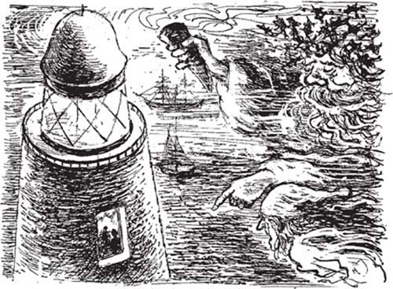
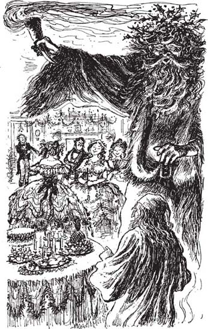

11
Listen to Part 1:

Giáng sinh vui vẻ ở khắp mọi nơi
Chẳng mấy chốc, Scrooge và Hồn ma của Giáng sinh hiện tại đã rời khỏi nhà Cratchits và đi dọc qua các con phố. Trời bắt đầu tối.
Những người vui vẻ đang đi thăm bạn bè và người thân để chúc họ một Giáng sinh vui vẻ. Hồn ma vẫy chiếc đuốc của mình qua tất cả bọn họ và cười lớn.
Đột nhiên, thành phố biến mất và mọi thứ đều thay đổi. Scrooge nhìn thấy cỏ và đá bên dưới, và những hồ nước phủ đầy băng.
Mặt trời đang lặn và chẳng mấy chốc trời tối và rất lạnh.
‘Chúng ta đang ở đâu?’ Scrooge hỏi.
‘Chúng ta đang ở một nơi mà những người thợ mỏ sống,’ hồn ma trả lời. ‘Họ đào than dưới lòng đất. Họ là những người nghèo, nhưng họ biết về tôi. Nhìn kìa!’
Scrooge nhìn thấy một gia đình lớn trong một ngôi nhà bằng đá rất nhỏ. Người già và người trẻ ngồi quây quần bên bếp lửa và họ đang hát một bài hát mừng Giáng sinh.
‘Nắm lấy áo choàng của tôi lần nữa,’ hồn ma nói. Sau đó, cuộc hành trình tiếp tục. Đôi khi là ban ngày và đôi khi là ban đêm. Scrooge thấy rằng hồn ma đang già đi. Tóc của nó bây giờ đã bạc.
Scrooge sợ hãi khi họ bay ra ngoài biển. Anh ta nhìn thấy một ngọn hải đăng trên những tảng đá nguy hiểm. Ánh sáng rực rỡ từ ngọn hải đăng báo cho các con tàu tránh xa khỏi những tảng đá. Hai người đàn ông sống trong ngọn hải đăng ở rất xa nhà và gia đình của họ. Nhưng họ đang cười và nói ‘Merry Christmas’ với nhau.
Listen to Part 2:

Hồn ma đưa Scrooge ra xa hơn nữa ngoài biển. Ở đó Scrooge nhìn thấy một con tàu. Các thủy thủ trên tàu đang nói về gia đình của họ. Họ hát những bài hát mừng Giáng sinh và họ rất vui vẻ.
Sau đó, Scrooge đột nhiên nghe thấy ai đó cười. Anh ta đã nghe thấy tiếng cười đó trước đây. Đó là tiếng cười của người cháu của mình, Fred.
Bây giờ Scrooge và hồn ma đang ở trong ngôi nhà sáng sủa và sạch sẽ của Fred. Nó đầy ắp người. Có Fred, và vợ anh ta, người rất xinh đẹp. Có những chị em vợ anh ta và có một người bạn tên là Mr Topper.
Như trước, không ai có thể nhìn thấy Scrooge hoặc hồn ma. Fred đang nói và cười. Scrooge lắng nghe. Fred đang nói về người chú của mình – về anh ta!
‘Chú Scrooge nói rằng Giáng sinh là vô nghĩa. Chú ấy nói, “Đó là trò lừa bịp! Bah!”’ Fred nói. Chàng trai trẻ đang cười, nhưng anh ta cũng rất tử tế.
‘Chú của anh là một ông già đáng thương,’ vợ của Fred nói. ‘Chú ấy chẳng quan tâm đến ai cả. Chú ấy chỉ quan tâm đến tiền của mình.’
‘Chú ấy là một ông già kỳ lạ. Tiền của chú ấy không làm chú ấy hạnh phúc,’ Fred trả lời. ‘Em thấy thương chú ấy. Em đã mời chú ấy đến ăn tối Giáng sinh với chúng ta hôm nay. Chú ấy không chịu đến. Nhưng em không thể giận chú ấy. Chú ấy tự làm mình không hạnh phúc.
‘Em sẽ nói “Giáng sinh vui vẻ” với chú Scrooge mỗi năm,’ Fred tiếp tục. ‘Em sẽ mời chú ấy đến ăn tối mỗi năm vào Giáng sinh.’
Tất cả mọi người lại cười, sau đó họ bắt đầu chơi các trò chơi. Scrooge thích xem tất cả các trò chơi. Anh ta cũng muốn chơi chúng.
Listen to Part 3:
Hồn ma mỉm cười với Scrooge. Ông ta vui mừng khi thấy ông già này đang thích bữa tiệc Giáng sinh của Fred.
‘Chúng ta có thể ở lại đây được không?’ Scrooge hỏi hồn ma. Anh ta nghe như một đứa trẻ đang phấn khích. ‘Chúng ta có thể ở lại đây lâu không?’
Scrooge xem một trò chơi khác.
‘Anh đang nghĩ đến một người,’ Fred nói với vợ và bạn bè. ‘Các em phải đoán xem người này là ai. Hãy hỏi anh những câu hỏi. Anh sẽ trả lời Có hoặc Không.’
Họ hỏi những câu hỏi. Họ cố gắng đoán xem Fred đang nghĩ đến ai. Fred đang nghĩ đến một người giống như một con vật khó chịu. Con vật này phát ra những tiếng động không thân thiện.
‘Em biết rồi! Em biết rồi!’ một trong những chị gái nói. ‘Đó là chú Scrooge của anh!’
Tất cả họ đều cười.
‘Bây giờ chúng ta phải cùng nhau uống rượu và chúc “Giáng sinh vui vẻ” cho chú tôi,’ người cháu của Scrooge nói. ‘Chúng ta đã cười chú ấy tối nay, vì vậy chúng ta cũng phải tử tế với chú ấy nữa.’
Fred nâng ly rượu vang. ‘Giáng sinh vui vẻ, chú ơi, dù chú đang ở đâu,’ anh ta nói.
Scrooge ước mình có thể nói ‘Cảm ơn’ với người cháu của mình. Nhưng anh ta không thể nghĩ về Fred nữa. Hồn ma đưa Scrooge đi đến nhiều ngôi nhà và nhiều bữa tiệc khác. Ở mọi nơi, hồn ma vẫy đuốc và làm mọi người vui vẻ.
Listen to Part 4:
Nhiều ngày và đêm trôi qua. Hồn ma ngày càng già đi khi họ đi. Scrooge thấy rằng tóc của hồn ma giờ đã bạc trắng.
‘Ông sắp phải đi sớm chứ?’ Scrooge hỏi.
‘Đúng vậy. Tôi không còn nhiều thời gian nữa rồi,’ Hồn ma của Giáng sinh hiện tại nói. ‘Tôi phải đi vào đêm nay lúc nửa đêm.’

Hồn ma mỉm cười với Scrooge. Ông ta vui mừng khi thấy ông già này đang thích bữa tiệc Giáng sinh của Fred.
Họ đang ở trên một con phố ở London. Scrooge nghe thấy tiếng chuông nhà thờ reo. Đã gần nửa đêm.
Sau đó, anh ta nhìn thấy một bàn tay nhỏ của một đứa trẻ. Nó đang cầm lấy áo choàng của hồn ma.
‘Đây là ai?’ Scrooge hỏi.
Hồn ma kéo hai đứa trẻ ra từ phía sau nó. Có một bé trai và một bé gái. Chúng là những đứa trẻ gầy gò, mặc quần áo rách rưới. Chúng trông sợ hãi, tức giận và đói. Chúng không có vẻ thân thiện.
Scrooge ngạc nhiên. ‘Hồn ma, đây có phải là những đứa con của ông không?’ anh ta hỏi.
Listen to Part 5:
‘Không,’ hồn ma nói. ‘Đây là những đứa trẻ nghèo từ các đường phố của Luân Đôn.
Scrooge rất buồn. ‘Những đứa trẻ tội nghiệp!’ anh ta nói. ‘Chúng không có nhà à? Trẻ em cần có nhà.’
‘Không có nhà tù nào sao? Không có trại tế bần nào sao? Hãy đưa những người nghèo vào trại tế bần,’ hồn ma nói.
Scrooge nhớ lại những lời đó. Đó là chính lời của anh ta. Anh ta đã nói chúng với người đàn ông đến văn phòng của anh ta. Người đàn ông đó đã xin anh ta tiền để giúp đỡ những người nghèo.
Chuông nhà thờ điểm mười hai lần. Đã là nửa đêm. Scrooge mở miệng để nói với hồn ma. Nhưng người đàn ông khổng lồ trong chiếc áo choàng xanh lá cây và trắng đã biến mất.
Sau đó, Scrooge nhìn thấy một thứ gì đó đang tiến về phía mình. Đó là một hồn ma khác. Hồn ma này mặc một chiếc áo choàng đen dài chạm đất. Đầu và khuôn mặt của nó được che bởi một chiếc mũ trùm đầu lớn.
Scrooge nhớ lại những lời của hồn ma của Marley. ‘Hồn ma thứ ba sẽ đến vào nửa đêm …’
Mục lục
- Trang tiêu đề
- Mục lục
- Ghi chú về tác giả
- Ghi chú về cuộc sống ở Anh vào thế kỷ XIX
- 1 Ebenezer Scrooge
- 2 Khách viếng thăm Scrooge
- 3 Bóng ma của Marley
- 4 Tin tức cho Scrooge
- 5 Bóng ma Giáng sinh quá khứ
- 6 Scrooge khi còn là một cậu bé
- 7 Giáng sinh với gia đình Fezziwigs
- 8 Cô gái yêu Scrooge
- 9 Bóng ma Giáng sinh hiện tại
- 10 Giáng sinh với gia đình Cratchits
- 11 Một Giáng sinh vui vẻ ở khắp mọi nơi
- 12 Bóng ma Giáng sinh tương lai
- 13 Tiny Tim
- 14 Một người đàn ông thay đổi
- Những điểm cần hiểu
- Trang bản quyền